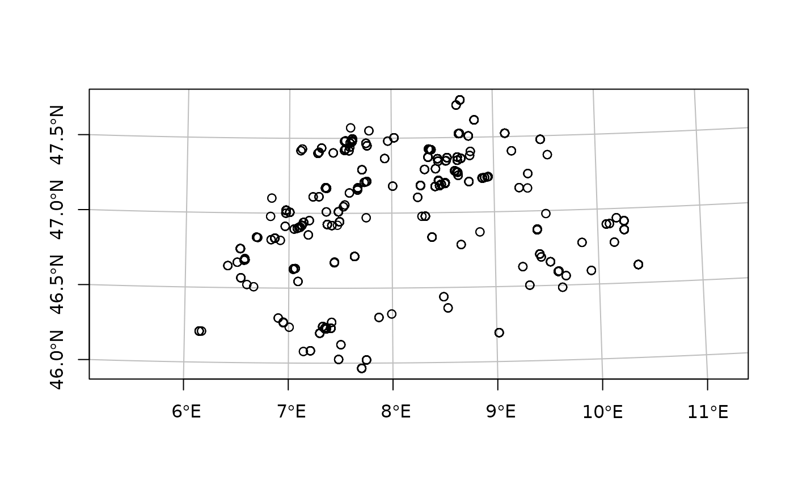

XRONOS is a worldwide database of chronological data (such as radiocarbon or dendrochronological dates) from archaeological contexts. The xronos package allows you to retrieve data from XRONOS directly using R. It also provides tools for inspecting and transforming this data for analysis with commonly-used packages.
This vignette introduces the main features of the xronos package. It covers:
- Querying and retrieving chronological data from XRONOS with
chron_data() - Calibrating radiocarbon dates with xronos and c14
- Mapping chronological data with xronos and sf
Get chronological data
chron_data() provides an R interface to XRONOS’ REST API for retrieving chronological data. Without further parameters, it will request all available data from XRONOS.
Since this takes some time, you will be prompted to confirm this request. Use chron_data(.everything = TRUE) to confirm that you do want to download all records from XRONOS and suppress this prompt.
In practice, you’ll probably want to narrow down the dataset with a search query. You can use the following parameters, passed as arguments to chron_data(), to filter the results:
labnrsitesite_typecountryfeaturematerialspecies
You can combine any number of parameters, and each parameter can take either a single value or a vector of values that should be included in the results.
For example, to get all radiocarbon dates from Switzerland on either charcoal or bone:
chron_ch <- chron_data(country = "Switzerland", material = c("charcoal", "bone"))The results of the query are returned as a table of records (a tibble if tibble is installed, otherwise a data frame):
chron_ch
#> # A tibble: 197 × 21
#> id labnr reference source_database bp std cal_bp cal_std delta_c13
#> <int> <chr> <lgl> <chr> <int> <int> <int> <int> <dbl>
#> 1 7878 ETH-111… NA calpal 3845 60 4261 164 0
#> 2 7880 ETH-261… NA calpal 5050 60 5801 135 0
#> 3 7887 ETH-976… NA calpal 4905 65 5643 188 0
#> 4 7888 ETH-976… NA calpal 4910 65 5648 188 0
#> 5 7889 ETH-976… NA calpal 4825 70 5540 190 0
#> 6 7890 ETH-976… NA calpal 4965 60 5699 171 0
#> 7 12851 ETH-261… NA radon 5050 60 5801 135 NA
#> 8 13975 CRC-1075 NA radon 4245 165 4795 478 0
#> 9 14013 B-2113 NA radon 5780 270 6610 613 NA
#> 10 16324 CRC-354 NA radon 3700 85 4044 259 0
#> # … with 187 more rows, and 12 more variables: site <chr>, site_phase <chr>,
#> # feature <chr>, period <lgl>, typochronological_unit <lgl>,
#> # ecochronological_unit <lgl>, material <chr>, lat <chr>, lng <chr>,
#> # country <chr>, species <chr>, site_type <chr>Calibrating radiocarbon data
There are several R packages that include functions for radicarbon calibration, including rcarbon, oxcAAR (requires external software), and BChron. Calibrating radiocarbon data from XRONOS should follow the same general principle whichever is used: pass the columns bp and std—and possibly also labnr as a unique ID—as arguments to the calibration function. For example, using rcarbon:
library(rcarbon)
chron_ch_cal <- calibrate(x = chron_ch$bp,
errors = chron_ch$std,
ids = chron_ch$labnr,
verbose = FALSE)The results are best understood using a plot:
multiplot(chron_ch_cal[1:5])
Map chronological data
Wherever possible, XRONOS includes the geographic location of chrons, stored as latitude and longitude coordinates. The convenience function chron_as_sf() converts these coordinates into a ‘simple features’ geometry column for use with the sf package:
library(sf)
#> Linking to GEOS 3.8.1, GDAL 3.2.1, PROJ 7.2.1
chron_as_sf(chron_ch)
#> Warning: 7 rows with missing or invalid coordinates were removed.
#> Simple feature collection with 190 features and 21 fields
#> Geometry type: POINT
#> Dimension: XY
#> Bounding box: xmin: 6.1419 ymin: 46.0211 xmax: 10.3818 ymax: 47.7161
#> Geodetic CRS: WGS 84
#> # A tibble: 190 × 22
#> id labnr reference source_database bp std cal_bp cal_std delta_c13
#> * <int> <chr> <lgl> <chr> <int> <int> <int> <int> <dbl>
#> 1 7878 ETH-111… NA calpal 3845 60 4261 164 0
#> 2 7880 ETH-261… NA calpal 5050 60 5801 135 0
#> 3 7887 ETH-976… NA calpal 4905 65 5643 188 0
#> 4 7888 ETH-976… NA calpal 4910 65 5648 188 0
#> 5 7889 ETH-976… NA calpal 4825 70 5540 190 0
#> 6 7890 ETH-976… NA calpal 4965 60 5699 171 0
#> 7 12851 ETH-261… NA radon 5050 60 5801 135 NA
#> 8 13975 CRC-1075 NA radon 4245 165 4795 478 0
#> 9 16324 CRC-354 NA radon 3700 85 4044 259 0
#> 10 16330 CRC-1073 NA radon 4986 174 5737 410 0
#> # … with 180 more rows, and 13 more variables: site <chr>, site_phase <chr>,
#> # feature <chr>, period <lgl>, typochronological_unit <lgl>,
#> # ecochronological_unit <lgl>, material <chr>, lat <chr>, lng <chr>,
#> # country <chr>, species <chr>, site_type <chr>, geometry <POINT [°]>The result is an sf object, which includes the original data, plus a geometry column representing the point coordinates and information on the coordinate reference system used.
Change the crs parameter to transform the geometries into another coordinate reference system. This can be anything understood by sf::st_crs()). For example, to use the Swiss National Grid (EPSG:2056):
chron_as_sf(chron_ch, crs = 2056)
#> Warning: 7 rows with missing or invalid coordinates were removed.
#> Simple feature collection with 190 features and 21 fields
#> Geometry type: POINT
#> Dimension: XY
#> Bounding box: xmin: 2499921 ymin: 1096664 xmax: 2825378 ymax: 1285747
#> Projected CRS: CH1903+ / LV95
#> # A tibble: 190 × 22
#> id labnr reference source_database bp std cal_bp cal_std delta_c13
#> * <int> <chr> <lgl> <chr> <int> <int> <int> <int> <dbl>
#> 1 7878 ETH-111… NA calpal 3845 60 4261 164 0
#> 2 7880 ETH-261… NA calpal 5050 60 5801 135 0
#> 3 7887 ETH-976… NA calpal 4905 65 5643 188 0
#> 4 7888 ETH-976… NA calpal 4910 65 5648 188 0
#> 5 7889 ETH-976… NA calpal 4825 70 5540 190 0
#> 6 7890 ETH-976… NA calpal 4965 60 5699 171 0
#> 7 12851 ETH-261… NA radon 5050 60 5801 135 NA
#> 8 13975 CRC-1075 NA radon 4245 165 4795 478 0
#> 9 16324 CRC-354 NA radon 3700 85 4044 259 0
#> 10 16330 CRC-1073 NA radon 4986 174 5737 410 0
#> # … with 180 more rows, and 13 more variables: site <chr>, site_phase <chr>,
#> # feature <chr>, period <lgl>, typochronological_unit <lgl>,
#> # ecochronological_unit <lgl>, material <chr>, lat <chr>, lng <chr>,
#> # country <chr>, species <chr>, site_type <chr>, geometry <POINT [m]>Sometimes you might see a warning about rows with missing or invalid coordinates being dropped. This is because it is currently not possible to include rows without a geometry in a simple features table. To suppress the warning—and clarify your intent—you may want to explicitly remove these before calling chron_as_sf():
chron_ch |>
chron_drop_na_coords() |>
chron_as_sf(crs = 2056) ->
chron_chsf and related packages offer many options for manipulating, analysing, and mapping spatial data. As a simple example, we can plot the location of our dates using their natural projection (here we use sf::st_geometry() to plot only the points themselves, not their data attributes):
plot(sf::st_geometry(chron_ch), graticule = TRUE, axes = TRUE)
See the sf documentation for more options for plotting simple features.
sf objects generally act like data frames, but if necessary you can explicitly restore the plain table of data with sf::st_drop_geometry():
chron_ch <- st_drop_geometry(chron_ch)Note that this does not restore any records that were dropped by chron_as_sf().